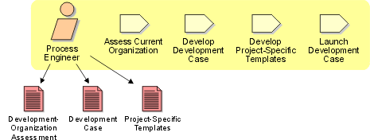

Role: Process
Engineer
The process engineer role is responsible for the software development process
itself. This includes configuring the process before project startup and
continuously improving the process during the development effort.

Staffing
A person acting as process engineer needs to have a broad
knowledge of software development. Good communication skills are essential for a
person acting in this role.
Copyright
© 1987 - 2001 Rational Software Corporation
|  Roles and Activities >
Roles and Activities >
 Process Engineer
Process Engineer